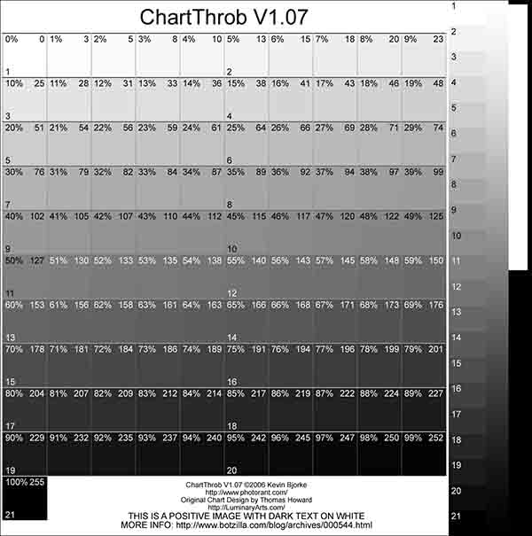
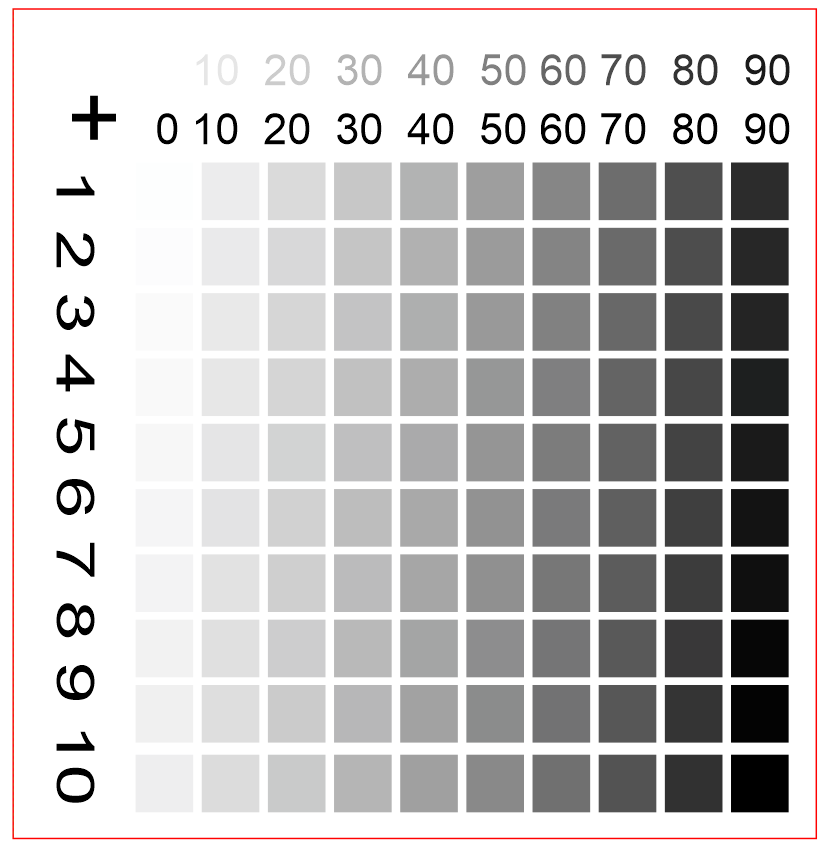

Here’s a handy script that lets you leave your printer in its default mode (i.e. configured for printing ordinary documents on letter or A4) but also print photos from the command line. The handy thing here is you can then skip the annoyance of manually editing a bunch of printing menus to configure the paper size, tray, glossy paper, DPI, 4x6” page size, and a specific color profile.
I wanted to share this trick on printing because, while CUPS has, by-and-large, just worked for me in the past, I’ve been trying to get back into photography lately. Things are more fun when it is as easy as possible to capture, postprocess, and print photos, so I decided to optimize that last step a little more.
Debian CUPS Configuration
If you haven’t already configured CUPS for printing, you might want just review the basics of setting up printing on Debian for a printer like my Canon MG6220:
- Install CUPS with
sudo apt-get install cups - Browse to http://localhost:631 to configure CUPS, add printers, and manage them. If you’re having trouble logging in to edit things, make sure you are a member of the
lpadmingroup. - There’s a bunch of settings for the default configuration, but I found the key settings to improve quality in general were found in the Gutenprint manual.
- Set
General->Color ModeltoCMYK, since my printer works in CMYK color space. - Set
Print Features Common -> Ink TypetoCMYK color; - Set
Output Control Common -> Color CorrectiontoRaworUncorrectedto disable the default color enhancement algorithms that can interfere with your own color-tuning; - Set
Output Control Common -> Image TypetoPhotographto get better photos - Set
Output Control Extra 1 -> Dither AlgorithmtoEvenTone
- Set
- Finally, set the configured printer as the “default printer” if you want to use lpr.
I find that these settings are good enough for general printing of any kind, and don’t harm photo prints as much as other settings can.
Photo Printing Script
To print a 4x6 photo from the command line, I opted to go for a two-stage approach.
-
Do any printing-specific conversion/processing with imagemagick’s
convert. I wanted to not have to ever worry if a photo was landscape or portrait, so I used the-rotate '90>'option here, and I also wanted the image to be resized to be 600DPI and to fill as much of a 5x7” photo paper as possible. -
Send the job with
lpr. By using options to this command, one can specify to use the rear tray, a certain media size, and glossy paper without chainging any program’s defaults.
There are a ton of options you can pass to lpr, so if you edit this script, you may find it helpful to use lpoptions -l and pipe that to grep to find the options you want.
One last thing: the script uses uuidgen, so you’ll need to install those as well: sudo apt-get install uuid-runtime imagemagick.
On to the script, which accepts a single argument of a JPG or PNG file to print.
#!/bin/bash
INFILE=$1
OUTFILE="/tmp/`uuidgen`"
echo "Converting $INFILE -> $OUTFILE, rotating and resizing as needed"
convert $INFILE -rotate '90>' -units PixelsPerInch -density 600 -background white -gravity center -resize 3000x4200 -extent 3000x4200 -colorspace cmyk $OUTFILE
echo "Printing $OUTFILE"
lpr -o resolution=600dpi -o media-type=GlossyPaper -o media=Custom.5x7in -o orientation-requested=3 -o size=one-sided -o fit-to-page -o InputSlot=Rear -o color-model=CMYK -P Canon_MG6200_series $OUTFILE
echo "Deleting $OUTFILE"
rm -f $OUTFILE
Other Hints on Print Tuning
It’s a bit dated, but cups-calibrate can be used to get settings that improve color tuning and are convenient to use in a form like this. For example, the output of cups-calibrate is the option -o profile=950,1000,1000,0,-200,-500,1000,0,0,-100,1000, which can be added to the lpr command.
I also found it handy to print test pages like this to get my grey/black ink transitions worked out:


Happy printing!